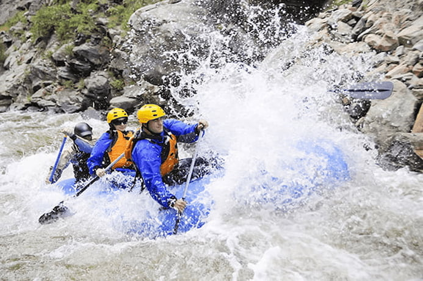

Experience one of a kind rafting trip, through a journey into the best rivers in California. Rafting for everyone offers unforgettable rafting trips starting late spring through out all summer season, providing options for all prospective rafters regardless of skill level. Come spend a half-day or full-day on the river with us at Rafting For Everyone.

Rafting For Everyone
History
White water rafting takes the name because "whitewater" is formed when water tumbles and falls, becoming aerated or infused with air. The bubbles effect turn the water white. During 1842 Lieutenant John Fremont and inventor Horace H. Day created a rubber raft featuring four rubber cloth tubes and a wrap-around floor to help survey the Great Plains and Rocky Mountains areas. That way they created modern white water rafting.
From ancient river travel to modern whitewater adventures, rafting has evolve from rustic rafts to specialized equipment. Let us take you to your best day experience! Rafting for everyone has navigated since 2004.
Adventure Awaits You